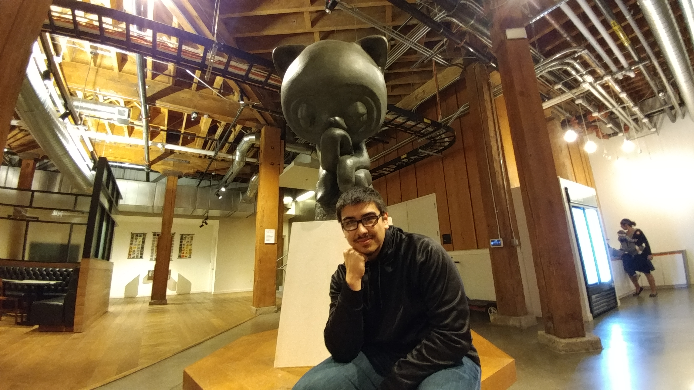
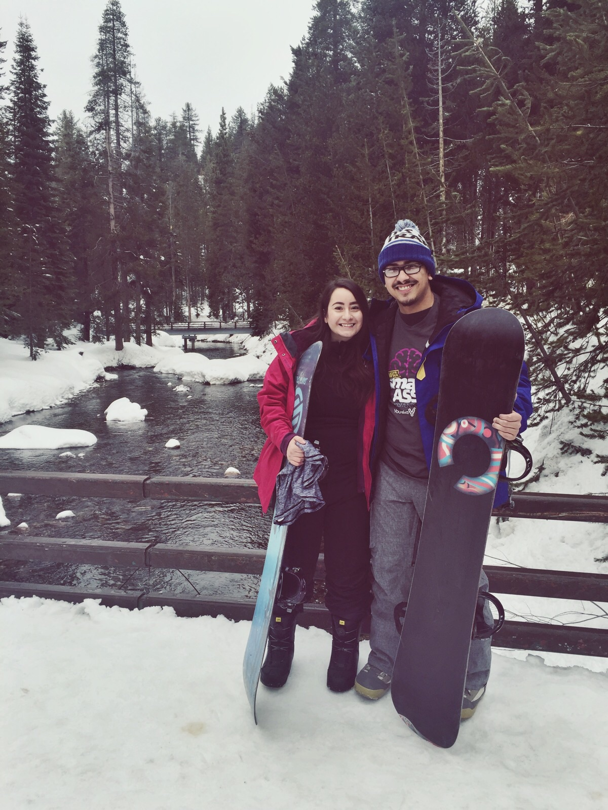
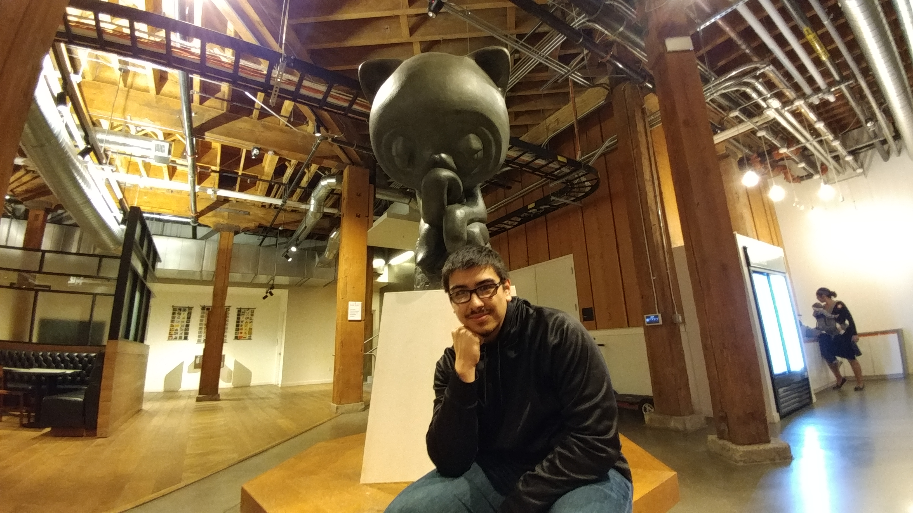
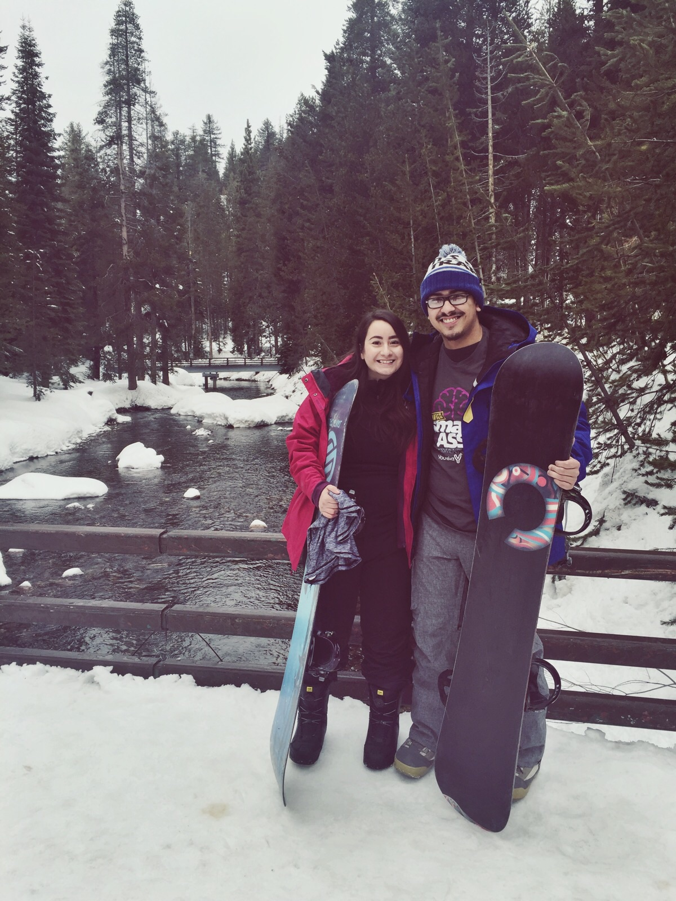

Specialties

MEAN Stack
I have been using the MEAN stack in my most recent projects. Just check out Froxxi, Evergreen and GDND in my showcase. Although I am skilled with Nodejs in the back-end and using RESTful routes, I spend most of my time in the front-end with Angularjs. My focus is always on UX by making sure the front end operates efficiently, with no hiccups.

Databases
Since the beginning of my career in tech, I have been working with databases. It started with using MS SQL Server, which gave me a solid foundation to learn even deeper skills in SQL. My knowledge carried over into MySQL where I am now creating procedures, views, functions and advanced for my teams.

Deployment
Although this is the newest skill to me, I love it very much. I have deployed many applications to Amazon Web Services for both myself as well as my teams now. I have become comfortable with deploying applications on my own and even solo debugging issues that sometimes only appear once the are up in the cloud.
 


